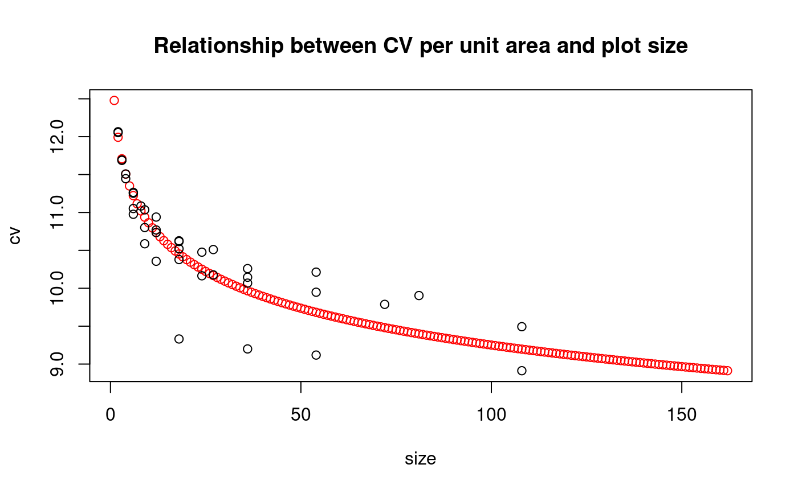
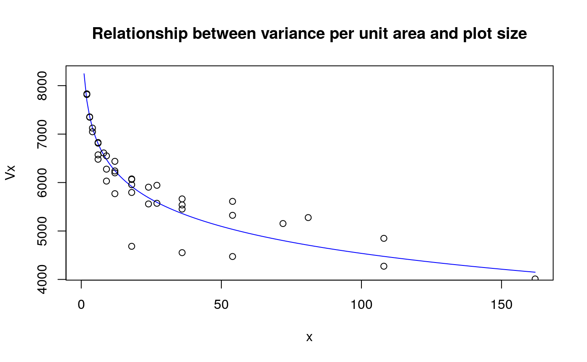

Smith's index of soil heterogeneity is used primarily to derive optimum plot size. The index gives a single value as a quantitative measure of soil heterogeneity in an area. Graph CV for plot size and shape.
index.smith(data, PLOT = TRUE, ...)
| data | dataframe or matrix |
|---|---|
| PLOT | graphics, TRUE or FALSE |
| ... | Parameters of the plot() |
function pattern of uniformity
Table of the soil uniformity
Vx=V(x)/x b
V(x) is the between-plot variance, Vx is the variance per unit area for plot size of x basic unit, and b is the Smith' index of soil heterogeneity.
Statistical Procedures for Agriculture Research. Second Edition. Kwanchai A. Gomez and Arturo A. Gomez. 1976. USA
library(agricolae) data(rice) #startgraph table<-index.smith(rice, main="Relationship between CV per unit area and plot size",col="red")#> Size Width Length plots Vx CV #> 1 1 1 1 648 9044.539 13.0 #> 2 2 1 2 324 7816.068 12.1 #> 3 2 2 1 324 7831.232 12.1 #> 4 3 1 3 216 7347.975 11.7 #> 5 3 3 1 216 7355.216 11.7 #> 6 4 1 4 162 7047.717 11.4 #> 7 4 2 2 162 7123.973 11.5 #> 8 6 1 6 108 6571.278 11.1 #> 9 6 2 3 108 6826.889 11.3 #> 10 6 3 2 108 6812.627 11.3 #> 11 6 6 1 108 6480.927 11.0 #> 12 8 2 4 81 6611.042 11.1 #> 13 9 1 9 72 6276.257 10.8 #> 14 9 3 3 72 6550.445 11.0 #> 15 9 9 1 72 6029.794 10.6 #> 16 12 1 12 54 5769.816 10.4 #> 17 12 2 6 54 6239.270 10.8 #> 18 12 3 4 54 6437.818 10.9 #> 19 12 6 2 54 6199.754 10.7 #> 20 18 1 18 36 4683.748 9.3 #> 21 18 2 9 36 6063.466 10.6 #> 22 18 3 6 36 6074.789 10.6 #> 23 18 6 3 36 5954.826 10.5 #> 24 18 9 2 36 5794.902 10.4 #> 25 24 2 12 27 5558.070 10.2 #> 26 24 6 4 27 5904.217 10.5 #> 27 27 3 9 24 5943.106 10.5 #> 28 27 9 3 24 5571.450 10.2 #> 29 36 2 18 18 4552.791 9.2 #> 30 36 3 12 18 5452.777 10.1 #> 31 36 6 6 18 5662.243 10.3 #> 32 36 9 4 18 5537.279 10.1 #> 33 54 3 18 12 4473.072 9.1 #> 34 54 6 9 12 5611.097 10.2 #> 35 54 9 6 12 5323.471 9.9 #> 36 72 6 12 9 5153.500 9.8 #> 37 81 9 9 8 5276.787 9.9 #> 38 108 6 18 6 4272.874 8.9 #> 39 108 9 12 6 4847.973 9.5 #> 40 162 9 18 4 4009.765 8.6# regression variance per unit area an plot size. model <- lm(Vx ~ I(log(Size)),uniformity) coeff <- coef(model) x<-1:max(uniformity$Size) Vx<- coeff[1]+coeff[2]*log(x) #startgraph plot(x,Vx, type="l", col="blue", main="Relationship between variance per unit area and plot size")#endgraph